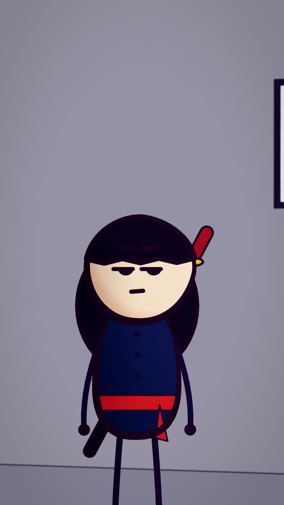
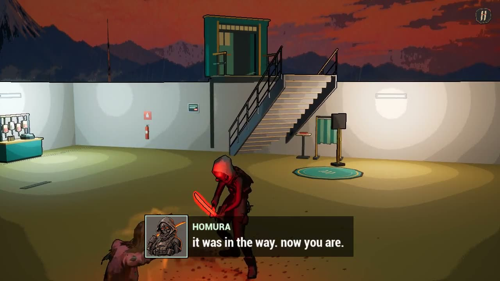
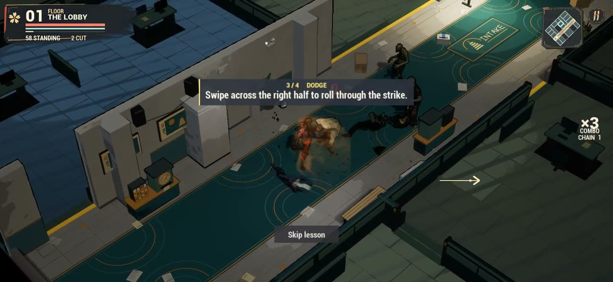
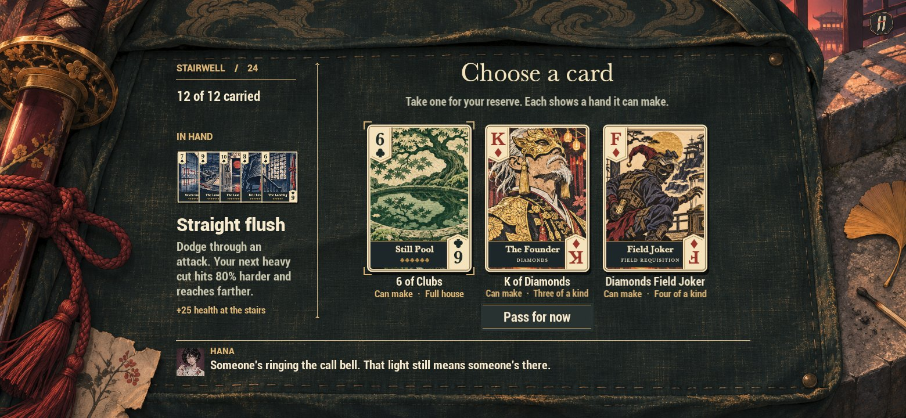

Dev log
What's new, what broke, what we learned
Newest first. Each post says what changed, shows it, and says what has not been checked yet. There is an RSS feed.

The cast, photographed
For the end credits we want the people of the tower as if they were real. Four portraits have been turned into photographs, plus one of Rin mid-cut.

An animated intro, narrated by Rin
Seventy seconds that explain the premise, drawn as a cartoon and told in Rin's own dry voice. It also settled what Rin sounds like in the game.

Homura learns the Captain's forms
The Expedition's duellist now fights with eight real sword forms across three duels that get faster and harder. She escapes the first two. Her blade glows red.

Build 0.1 is on TestFlight
The first build reached Apple's testing service this morning. It is one tester for now: the developer, on a new phone.

Two guardians get bodies of their own
Six of sixteen guardians were stand-ins on borrowed bodies. The Maintenance Chief and the Clinic's night nurse are the first two to be properly cast.

The first room teaches the next 99
Five clerks meet Rin in the lobby and the fight pauses while you try each move once: a slash, a combo, a roll, the Ultimate. Then the first card choice.

Rin's Ultimate: she kicks the sword
The Ultimate needed to feel like the end of an argument. Rin kicks her katana across the room. It took three passes in one afternoon to get it right.

The showcase, narrated in Thai
Two films for the Thai developer community: the landscape showcase with a Thai voiceover, and a developer update told in Pondd's own voice.

The whole tower: 100 floors, two endings, Endless
Fifteen minutes past midnight the climb was playable from the lobby to the rooftop garden, with a choice at the core, two endings and an endless mode. Then it was balanced.

Rin's deck: a poker hand is your power
Upgrades are playing cards. Five are in play, and the poker hand they make decides what Rin can do. It was designed and playtested on paper before any code.

It is called Cut Cut Cut
The game got its real name, a title screen, a reason for the tower, a running joke about the word "zombie", and a plan that runs all the way to release.

Floor 1 becomes a level
The first floor stopped being a test room. It got staff, a PA system, drops, a boss with a title card, and the thick-ink comic look the whole game now wears.

First playable: a samurai, a tower, one room at a time
The idea on the first night was small enough to finish: an isometric crawl up an office tower full of zombies. It was playable before midnight.